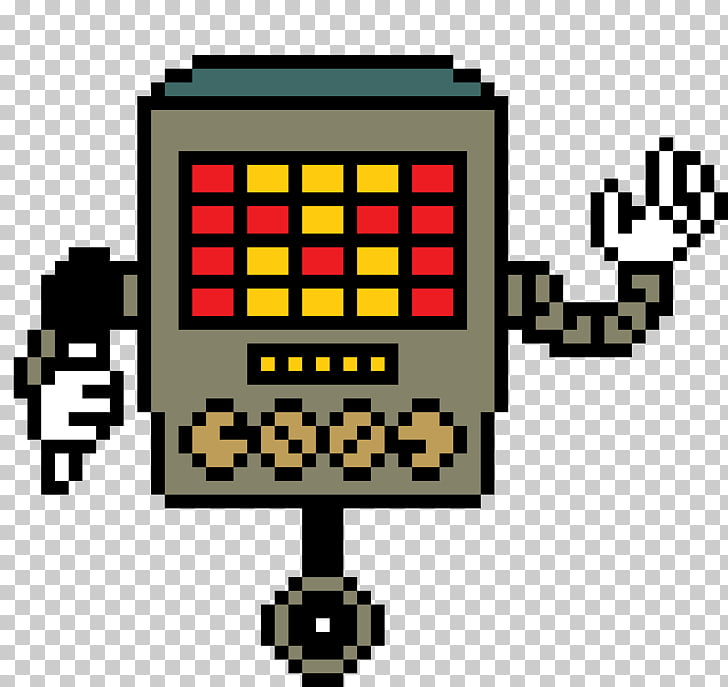

Моя любимая игра это UNDERTALE
В ней очень интересный сюжет. Девочка падает в подземелье к монстрам и знакомиться с ними.
Сейчас я хочу рассказать про своих любимых персонажей.
Меттатон мой первый любимый персонаж.
это робот, сделанный Альфис, для развлечения жителей Подземелья. Является четвёртым боссом в игре и боссом Хотленда и Ядра.
На картинке представлена его первая форма.
Ещё у Меттатона есть форма ЭКС
После того, как в Истинном Пацифистском или Нейтральном пути Альфис скажет игроку нажать на рычажок сзади Меттатона, он превращается в Меттатона ЕХ
Это моя любимая форма Меттатона.
Третья его форма МЕТТАТОН НЕО
Если протагонист проходит игру путём Геноцида, Меттатон трансформируется в Меттатона NEO, имеющего сходство с Меттатоном ЕХ, но с более боевым дизайном.
Эта форма очень красиво выглядит, но на ней не доработана защита, из за этого Меттатон погибает от первого удара.
Второй мой любимый персонаж этот призрак Напстаблук
Это меланхоличный призрак и музыкант, живущий около своей улиточной фермы в Водопаде. Является первым мини-боссом в игре.
Кстати, Напстаблук кузен Меттатона